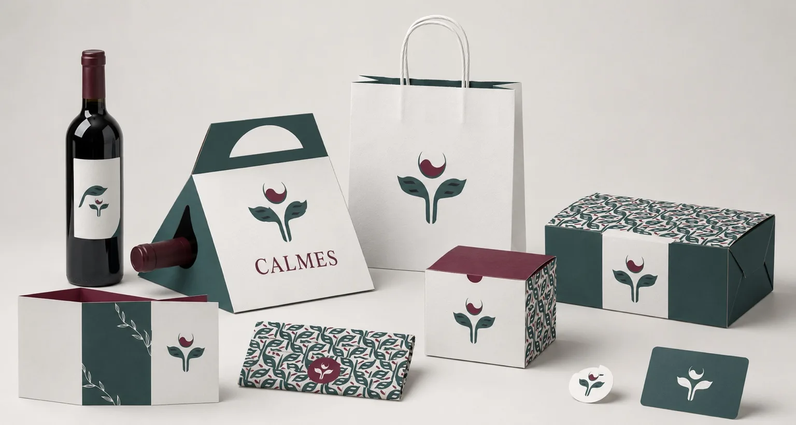
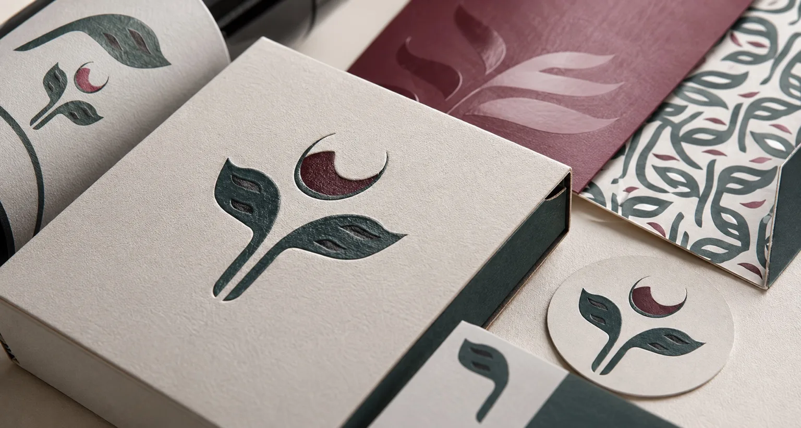
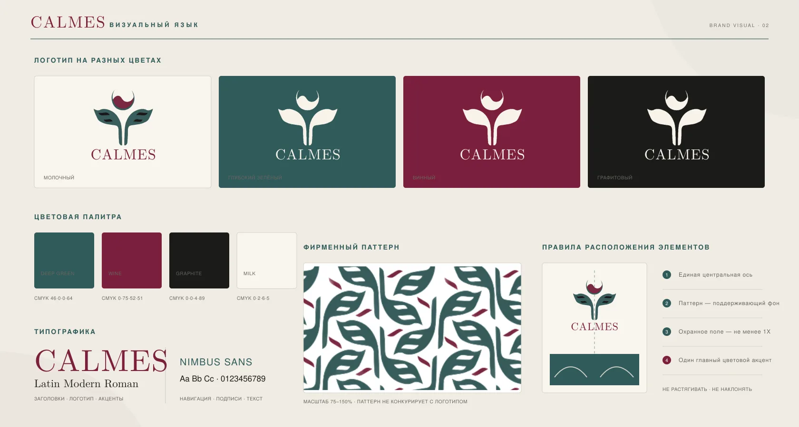

Знак и цвет
Растительная пластика и винный акцент формируют базовый образ. Светлые поля оставляют пространство вокруг знака.
Айдентика · упаковка
Учебная айдентика ресторана итальянской кухни с акцентом на упаковку.

Контекст
Объединить оформление пакетов, коробок, винной этикетки и полиграфии. Сохранить узнаваемость на поверхностях разной формы и размера.
Знак соединяет растительную форму с винным акцентом. Зелёный, винный и молочный цвета поддерживают гастрономическую тему, а паттерн связывает разные носители.
Логотип, палитра, фирменный паттерн, этикетка, упаковка и полиграфия.
Растительная пластика и винный акцент формируют базовый образ. Светлые поля оставляют пространство вокруг знака.
Повторяющаяся графика используется на больших поверхностях и внутренних частях упаковки. Масштаб паттерна меняется в зависимости от носителя.
Пакет, коробка и этикетка связаны цветом и графикой. На каждом формате выбирается свой баланс между знаком, паттерном и свободным полем.
Макеты и визуализации


Итог
Разработана учебная концепция айдентики и оформления упаковки. Показаны варианты применения на разных носителях.
Обсудить работу в команде ↗{kind=link}
{kind=link}